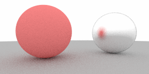
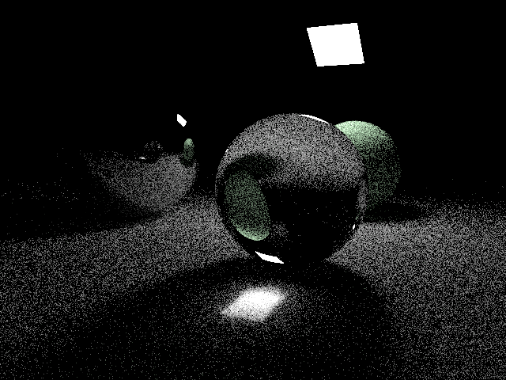
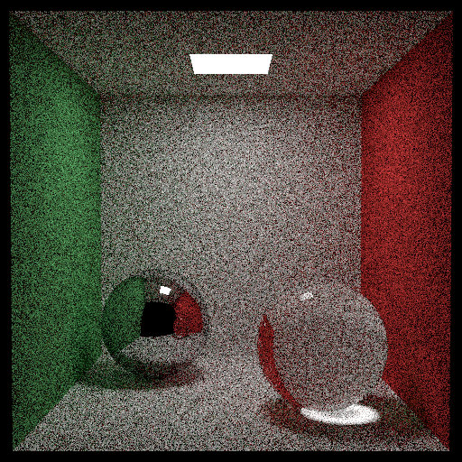

Ray Tracing
Credit to Professor Wojciech Jarosz for providing instruction, insight, and guidance for this project.
Ray Tracing

Advantages
- Wide range of applications and general applicability to anything that can be intersected by an array.
- Recursion can be easily implemented to create shadows, reflections, etc. simply as a biproduct of the general logic.
- Spatial antialiasing i.e removal of aliasing distortion artifacts of representing high-res images at low res.
- Selective improvment of image quality where it is needed.
Disadvantages
- Difficult to implment in hardware because unlike other traditional algorithms it does not utilize data coherence but rather treats each ray independently
- Performance, and notably variable peformance dependening primarily on scene complexity as well as the number of pixels on screen
- Traditional ray tracing is not the most photorealistic and increases of photorealism, while certainly achievable, come at a hefty toll in performance
Project Motivation
Nvidia’s new Turing GPUs have the potential to make the simulation cost, which limits ray tracing performance, obsolete. This will make real time ray tracing possible and we will most likely see a much stronger presence of it in upcoming video games. It is highly probable that it will gradually be used in parallel with other methods as it is worked into places where its strengths are well utilized within the industry.
Description
In this project I am building a ray tracer utilizing the DIRT (Dartmouth Introuctary ray tracer). This is c++ code purposed to provide a framework which allows students to focus on the logic and mathematical basework behind ray tracing rather than spending their time on creating supporting code and busy work.
Advantages
- Wide range of applications and general applicability to anything that can be intersected by an array.
- Recursion can be easily implemented to create shadows, reflections, etc. simply as a biproduct of the general logic.
- Spatial antialiasing i.e removal of aliasing distortion artifacts of representing high-res images at low res.
- Selective improvment of image quality where it is needed.

